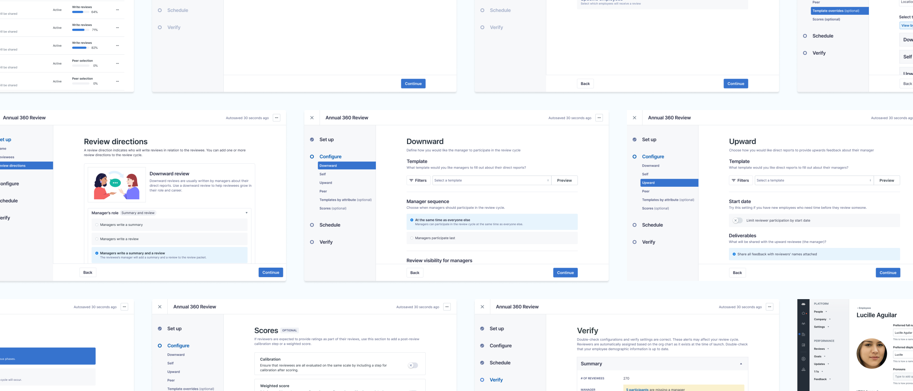
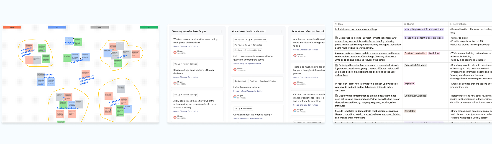
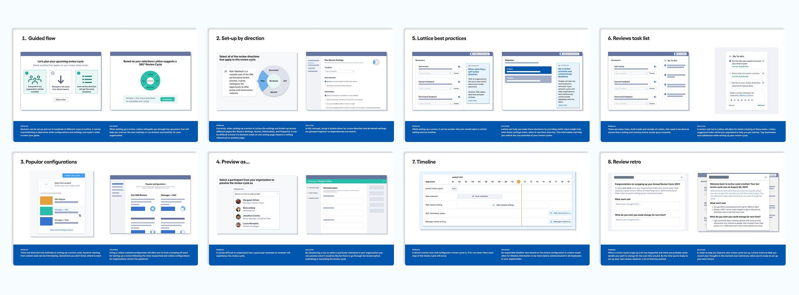
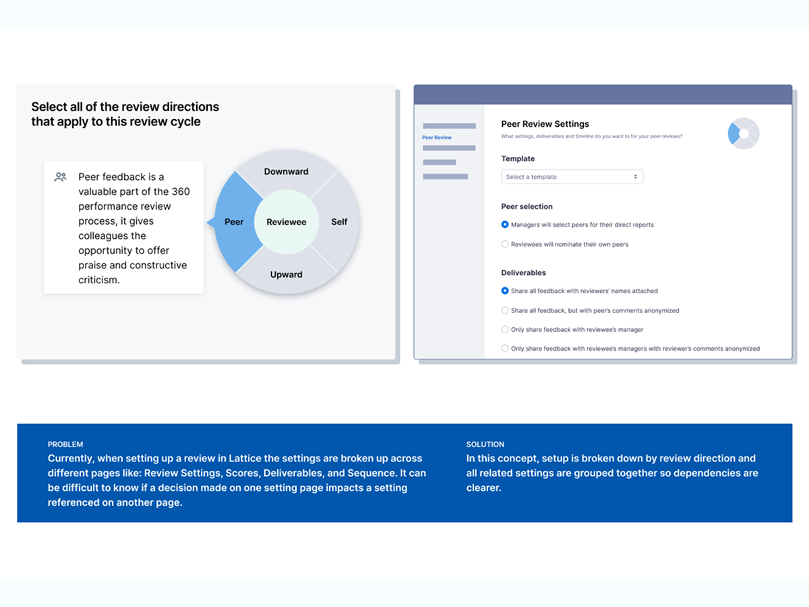
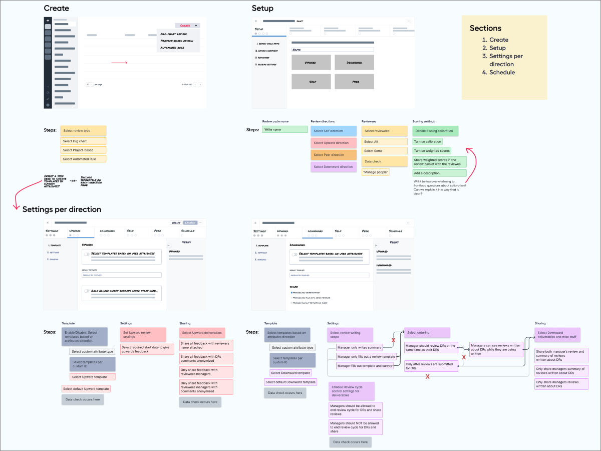

Reviews: From Strategy to Execution
Lattice's Reviews product was the company's tent-pole product, but its setup and configuration experience hadn't kept pace with how the product had grown. I led this initiative across both halves: from the research and concept strategy that defined what the product needed to become, through to the complete redesign that shipped it.

The problem
Admins — the champions and advocates of Lattice at their organizations — were navigating a fragmented, overloaded interface to configure review cycles that only happen one to two times per year. The stakes were high: a confusing setup experience meant support tickets, churn risk, and erosion of trust in a product that organizations depend on for performance and compensation decisions.
The Reviews setup process had accumulated UX debt as the product scaled. Information was scattered across multiple pages. Important decisions carried the same visual weight as minor ones. Admins had to hold the entire flow in their heads while configuring — with no way to see how choices across pages connected to each other.

Research & strategy
14 interviews. 10 days. Three questions that shaped everything.
My product partner and I conducted 14 stakeholder interviews over 10 days — talking to the internal teams who supported admins through the review setup process to understand where it was breaking down. From the synthesis, three guiding problem statements emerged.
The concepts
I designed and validated eight concepts through 11 rounds of concept testing with both customers and internal stakeholders — using dot voting and talk-aloud protocols to understand not just what resonated, but why.

Lattice guides admins through key questions to find the right settings
Setup organized around review directions, grouping all related settings together
Pre-packaged configurations based on what similar organizations actually use
See the review cycle as it will look to managers and employees before launching
Contextual guidance surfacing benchmark data and best practice advice inline
A unified task view for tracking and completing review cycle setup steps
A visual timeline showing what happens at each stage of the review cycle
Post-cycle reflection prompts to help teams improve their next review
Setup by direction — a fundamental rethinking of the IA
Concept #2 emerged clearly from testing. Rather than presenting admins with a flat list of settings scattered across multiple pages, Setup by Direction reorganized the entire experience around review directions — downward, upward, peer, self — grouping all related settings together so dependencies were immediately visible.
This wasn't a visual refresh. It was a rethinking of the underlying information architecture, aligning the setup experience with how admins actually think about reviews.

Execution
With the concept validated, I moved into a complete redesign of the review cycle creation experience across more than 11 distinct pages. My first step was a heuristic analysis of the existing flows — organized against Jakob Nielsen's 10 principles — which surfaced three problems that shaped the execution work:
Restructuring before designing
I restructured the information architecture first — mapping content blocks to new flow steps and evaluating each of the 11+ existing pages before touching visual design. I kept early explorations deliberately low-fidelity so the team could build familiarity and give meaningful feedback before getting into detail.
Input from engineering was critical here. The existing flow had numerous cross-page dependencies that needed to be identified and resolved before the new IA could work.

Validation and launch
After iterating across all 11+ pages, I built full prototypes of the complete experience and ran four usability tests with customers and four with internal stakeholders — participants navigating as they would during a real review cycle setup, thinking aloud throughout.
A notable collaboration: we piloted Lattice's burgeoning content design practice by pairing with their first content design hire throughout execution — fine-tuning copywriting and IA together to ensure the highest quality experience across every step of the flow.
Outcomes
Before launch, we established a CSAT baseline with the data team and monitored it closely post-launch. The results reflected the investment made upfront in getting the strategy right before building.
What I learned
The strategy half of this project was as important as the execution half — maybe more so. Investing in eight concepts and 11 rounds of testing before committing to a direction meant that when we built, we built the right thing. The 22% CSAT lift wasn't luck — it was the result of knowing exactly what problem we were solving before touching a single production screen.
Leading both strategy and execution on a newly formed team simultaneously also meant defining the work and building the team's ways of working at the same time. That's a different kind of challenge than either alone.